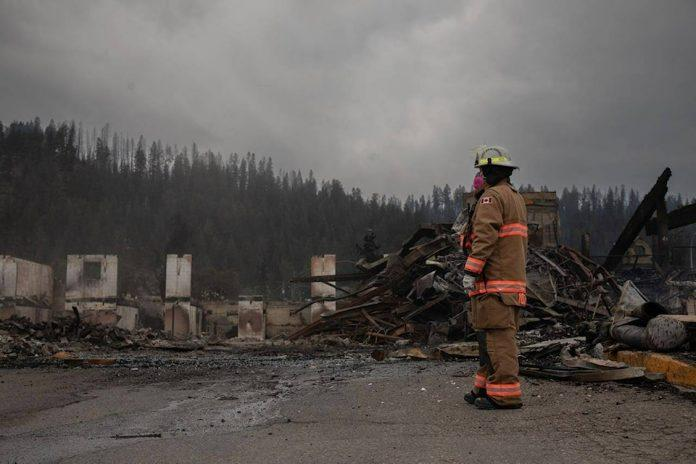

一名在贾斯珀国家公园拯救山火行动中执勤的卡加利消防队员不幸身亡，星期日众多消防人员、军队成员与其他急救人员并肩站着，共同为其哀悼。
星期六下午 2 点左右在失控的贾斯珀山火现场工作的 24岁阿省山火消防员被一棵树击中身亡，但他的身分并未被公布。加拿大皇家骑警表示，他来自卡加利以北约 200 公里的落矶山房屋消防基地。
阿省林业和公园部长 Todd Loewen 表示，出于对隐私的尊重，正在与其家人合作，并公布任何进一步的细节。
社交媒体上涌现了对他的哀悼。
Today we are mourning the loss of one of our own. An Alberta Wildfire crew member was fatally injured yesterday while responding to the wildfire in Jasper. This morning we stood heartbroken with our partners as a procession passed by. pic.twitter.com/5PfDjQG3XY
— Alberta Wildfire (@AlbertaWildfire) August 4, 2024
阿省山火资讯部门经理塔克 (Christie Tucker) 星期日表达了对失去同伴们的哀伤，却也强调工作将继续下去：“今天对消防员来说是艰难的一天，尽管我们知道荒地消防是一项充满危险的工作，但我们会尽力为任何情况做好准备。”
男子被树木击中后，机组人员立即提供了急救并启动了医疗应对计划。
使用轮式担架将该男子抬至最近的直升机停机坪，然后由 STARS 直升机送往医院，可惜最终仍无力挽回。
加拿大公园管理局在一份声明中表示：“这一事件凸显了荒地消防的危险性以及工作人员每天都会遇到的危险。”
阿省省长史密斯 (Danille Smith) 表示，她感谢勇敢的荒地消防员，每天冒着生命危险保护他人。
Heartbroken by the news that a firefighter has lost his life while battling the wildfires in Jasper. He served Albertans with unwavering bravery, and his loss is deeply felt.
I’m keeping his family, friends, and his fellow firefighters in my thoughts.
— Justin Trudeau (@JustinTrudeau) August 4, 2024
总理杜鲁多在 X 上表示，对这一消息感到心痛，赞扬这名殉职的 24 岁年轻人有坚定不移的勇气。
v01